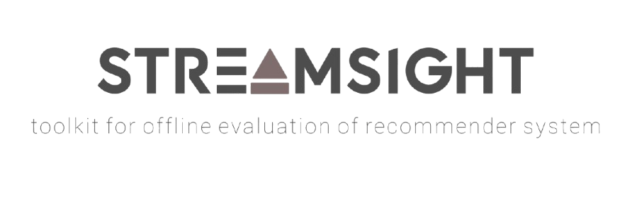
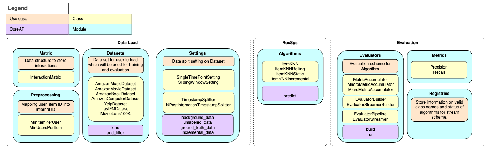

Welcome to Streamsight’s documentation!

Streamsight is an open-source python toolkit developed that provides a framework which observes the context of time to accurately model offline setting to actual real-world scenarios. We aim to provide API for the programmer to build and evaluate recommendation systems.
The overall architecture of the package is shown in the figure below. We split the toolkit into three main components: data handling, recommendation system, and evaluation. The data handling component is responsible for loading and preprocessing the data, the RecSys on implementing the recommendation algorithms and the Evaluation for evaluating the recommendation algorithms.

The demo notebooks can be found in the examples directory here. The notebooks demonstrate how to use the toolkit to build a recommendation system and evaluate them.
Why Choose Streamsight?
Real-World Applicability: Designed with a focus on real-world temporal contexts to enhance recommendation accuracy.
Comprehensive Components: Offers a seamless integration of data handling, algorithm implementation, and evaluation.
User-Friendly API: Simplifies the process of developing and testing recommendation systems, making it accessible for both researchers and practitioners.
Contents
Data handling
RecSys
Evaluation
Other supporting modules
Additional Resources